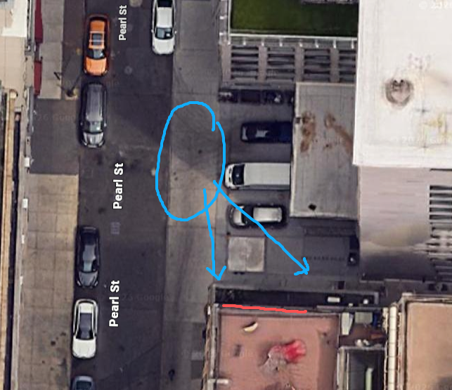

01 / Faces in the masonryAudience · 45°
Virtual relief · approximate brick registration●
A virtual masonry surface seen from the selected audience position. The moving forms are made of bricks; the original ghost silhouettes guide the flock.
Placement & wall registration Provisional setup
Angles are measured from the wall normal: 0° is straight-on. Positive angles place audience and projector on the same side. This is a top view of the adjustable geometry, not a surveyed site plan.

36 columns × 160 courses approximates 222 × 75 mm spacing over 8 × 12 m. The reference is too small to register every actual brick. These grid controls are a first alignment study; final mapping needs a sharper wall image and an on-site calibration.